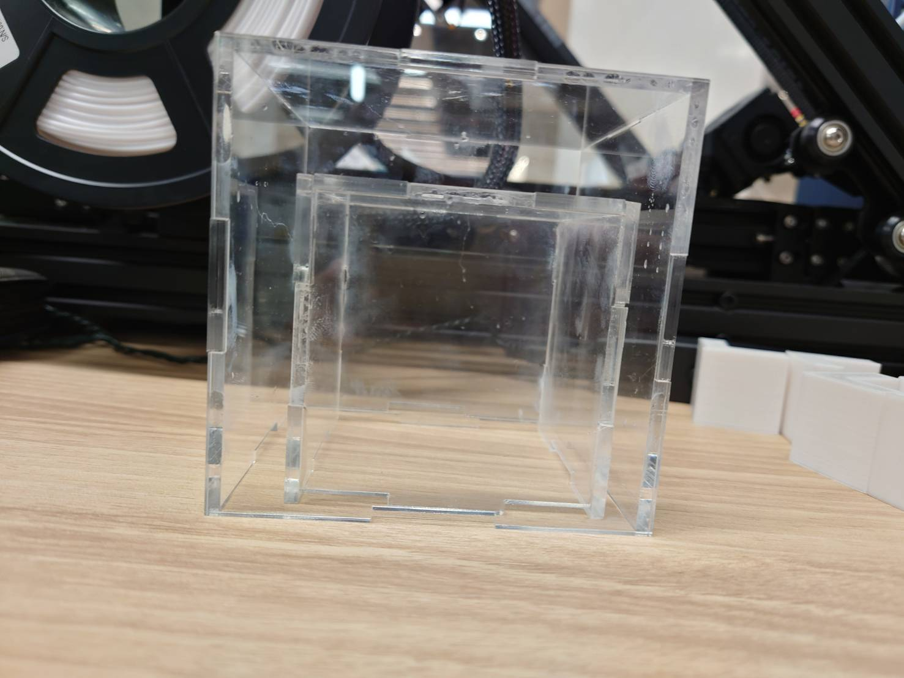

design for others
今回、他の人のためにという課題であったが、班で話して犬が勝手にご飯を食べてしまうという問題が起こっていることが共有の中で分かった。
そのため、犬が勝手に食べるのを少しでも難しくすればよいのでは?となったので、私は、箱をマトリョーシカの様にしたらよいのではないかと考えました。
最初の構想はこのように考えていた。
だがこれでは、既に商品として存在していると思ったので、箱を何個も用意してとるのを少しでも難しくしたらどうかと考え実行しました。
アクリルで箱を作ることで、外から見ることを可能にし、犬が食べ物が中にあると認識できるようにしました。
アクリルの角が鋭利であったため、３Dプリンターを用いて角を保護できるようなものを作成しました。

今回の課題を通して
今回、他の人のためにという課題であったため自分が作りたい！欲しい！ではなく他の人があったらいいなと思えるものを作る必要があったため
いつもとは違う角度から見ることがとても重要になっていた。